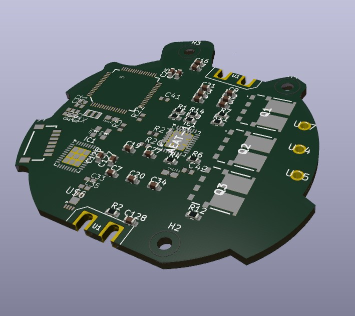

BD-X Style Droid — Brushless Motor Driver & Reinforcement Learning
Motor Control · RLThis project is a BD-X-style droid: a small, expressive bipedal character robot in the style of Disney's BD-X, built as a platform for custom brushless motor control and sim-to-real reinforcement learning.
The droid's actuators are driven by a 24-volt brushless motor driver that I designed and built. It evolved from a drop-in replacement for the stock Unitree Go2 motor drivers, and it gives full control over the field-oriented control loop and communication parameters, enabling custom control strategies and lower-level hardware access.
On the software side, I am using NVIDIA Isaac Sim and Isaac Lab to train reinforcement learning policies for the droid's locomotion — bridging the gap between custom hardware and modern sim-to-real RL workflows.
